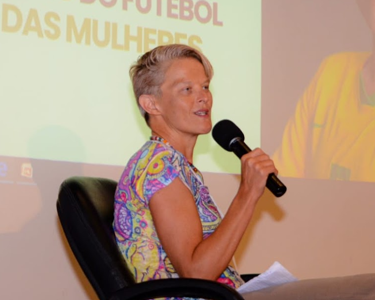
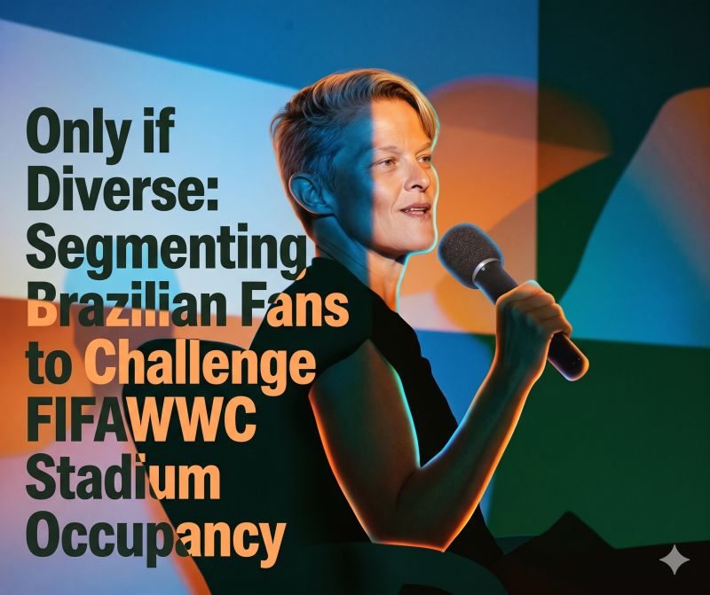
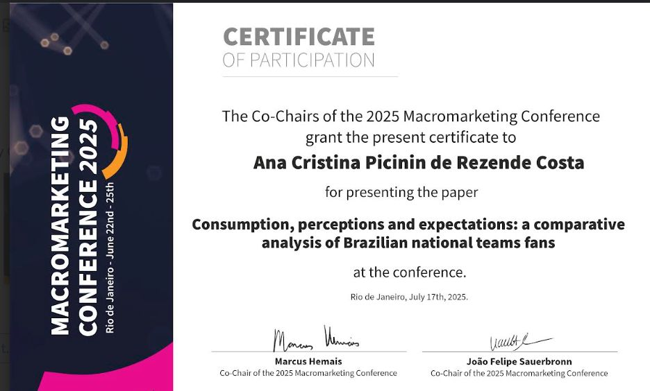
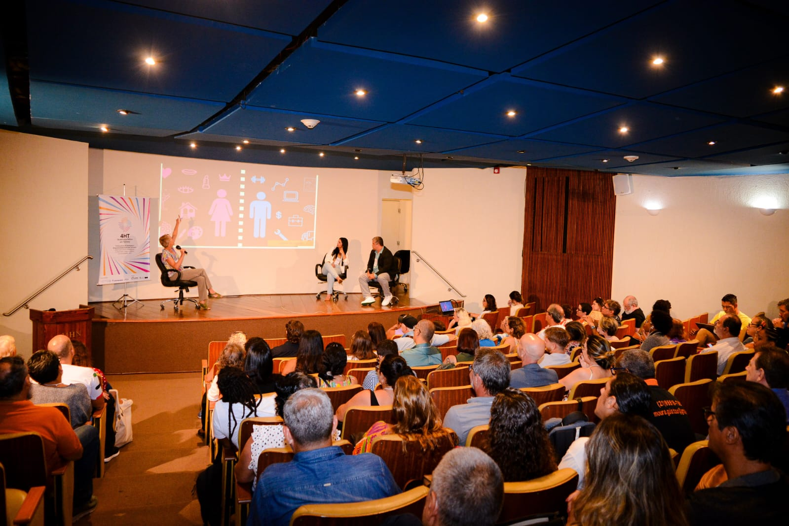
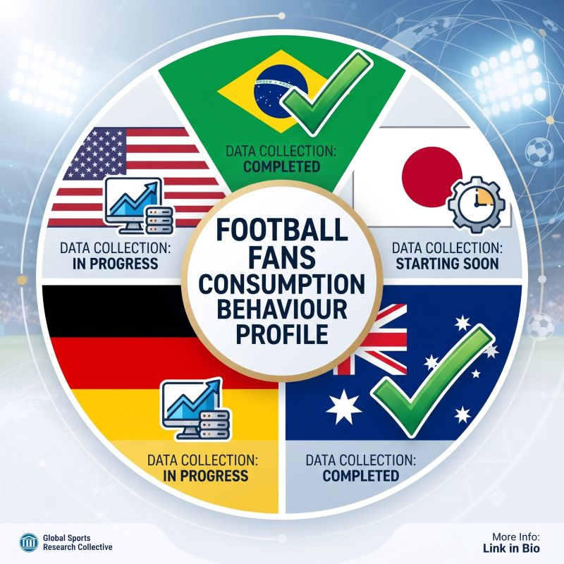

football national teams fan culture worldwide
Investigating sports consumption behavior, identities, and engagement strategies across women's and men's ecosystems.

01. About Me
Sport has always been an omnipresent ingredient in my life: a lifestyle, a social environment, and a powerful vehicle for positive change. As a PhD candidate at PUC-Rio and a consultant with over 20 years of experience in project management, communications, and marketing, I bridge the gap between academic research and operational reality to help the sports industry grow sustainably and inclusively.
Connect on LinkedIn ↗02. The Research
This ongoing doctoral study investigates global football fan consumption behavior, comparing national teams across different cultural and structural ecosystems. By bridging quantitative psychographic metrics (such as the Psychological Continuum Model) with fandom analytics, the research explores what drives stadium attendance, fan identities, and engagement strategies across both women's and men's football.
02.1 Data Collection Updates
PUC Rio
Finished
836 respondentes
Curtin University
Finished
640 respondentes
Deutsche Sporthochschule Köln
In Progress
140 respondentes
Widener University
In Progress
345 respondentes
Fukushi University
Will start soon
Preparation phase
03. Articles & Research

Stadium occupancy by fans of Brazilian national teams
This unpublished study reveals that four distinct fan groups of women's and men's national teams—"Only if Diverse," "Still in Love with the Game," "Only if Masculine and Inspiring," and "Almost Gone"—are willing to attend FIFAWWC27 stadiums. It details their unique motivations, from experience design to men's team disappointment driving attendance.
stay tunedThe value of the Brazilian women's national team fan
It employs a method that calculates the value of each women's national team fan over a given period of time (inspired by Customer Lifetime Value), empirically proving the higher value of female fans and those who are sympathetic to the LGBTQIA+ community.
stay tunedComparing Brazilian Team Fans
Comparing Brazilian team fans reveals key insights: passion over consumption, fan convergences, distinct match experiences, and authenticity views. It highlights how masculine, neoliberal, and eurocentric hegemonies shape the game through colonial dynamics. Finally, women's football emerges as a sustainable future for the sport.
stay tunedManagement of Sport Organizations
Main author of the chapter on Brazil in the book “Management of sport organizations at the crossroad of responsibility and sustainability: perceptions, practices, and prospects around the world".
Read More →Brand Building and Image Perception
Main author of the article "Brand building and image perception in women football: a cross-country comparison between Brazil and Germany”.
Read More →Personal Brand Construction
Main author of the article "Determinants of personal brand construction of national football players on Instagram” (Vol. 22, Nos. 3/4).
Read More →Women’s Football in Latin America
Editor and author of three chapters of the book "Women’s Football in Latin America - Volume 1 - Brazil" with Jorge Dorfman Knijnik.
Read More →Personal Brand & Fan Management
Proponent and director of the Personal Brand Management of Athletes and Fan Management program for women's football in São Paulo.
Read More →04. News & Updates

Reflections on Research & Feminine Presence
Driven by curiosity, my research explores the feminine in sports—specifically, football fan consumption profiles that include women. Receiving this certificate brings back powerful connections and learnings, including a key finding from my data: fans recognizing that colonial logic plays a starring role in our football.
Read More →Chat with Agência Ruua
It was in 2016 that #football came into my life to transform it.
This happened through the women's game and the inspiring example of athletes like Tamires and Érika Cristiano.
In this delightful chat with the team at Agência Ruua, I was able to share stories from this academic research journey on #womensfootball and exchange rich experiences.
Thanks for the opportunity and for capturing the moment!

Empowering Women in Sports & Entrepreneurship
#womensfootball reinvigorates the sport with inclusion and inspiring role models, extending far beyond the pitch. Discussing the FIFA Women's World Cup™ highlighted a key 4HE tourism insight: the 2027 tournament must create entrepreneurial opportunities for women across Brazil, channeling athletes' powerful stories to break barriers together.
Read More →
Presentation at 3S (Strategy Congress)
Presentation on research regarding how to attract fans to the FIFA Women's World Cup 2027, which will take place in Brazil.
Read More →
Football Fans Research Insights
New data and metrics regarding fan engagement behavior and strategic sports consumption dynamics.
Read More →Football Fans Research Discussion
If you are interested in updates on my football fans research, check out the recording of this webinar. Special thanks to De Waele Jean-Michel for the invitation, and to the participants for the high-level discussion.
See More →05. Contact
Open for research collaborations, sports strategy consulting, speaking engagements, and academic discussions.
Email: ana.costa@phd.iag.puc-rio.br